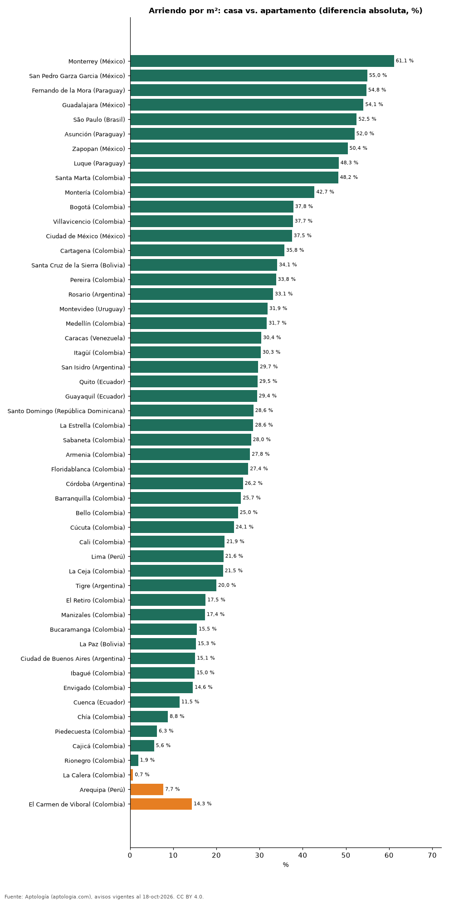

¿Sale más barato arrendar una casa o un apartamento por metro cuadrado? Comparación en 52 ciudades de Latinoamérica (octubre 2026)
Estudio con datos abiertos (CC BY 4.0). Versión original: https://github.com/elbroker/aptologia-datos/tree/main/estudios/arriendo-casa-vs-apartamento-por-m2-ciudades-latinoamerica-2026 · DOI: 10.5281/zenodo.23475840
En 49 de 52 ciudades el metro cuadrado de una casa se arrienda más barato que el de un apartamento; la mayor diferencia está en Monterrey (México) (-61,1 %). En El Carmen de Viboral (Colombia), en cambio, la casa se arrienda +14,3 % por m² frente al apartamento.
Resumen: comparamos el canon por m² de 132.113 casas y apartamentos en arriendo en 52 ciudades con 30 avisos o más de cada tipo.
Actualizado: 18 de octubre de 2026 (datos del 18 de octubre de 2026) · Próxima actualización: mensual.

Resumen
| Indicador | Valor |
|---|---|
| Casa más barata por m² | 49 de 52 ciudades |
| Mayor descuento de la casa | Monterrey (México): -61,1 % |
| Mayor recargo de la casa | El Carmen de Viboral (Colombia): +14,3 % |
Arriendo por m²: casa vs. apartamento
| Ciudad | Casa (USD/m² al mes) | Apartamento (USD/m² al mes) | Casa vs. apartamento |
|---|---|---|---|
| Monterrey (México) | 7,32 | 18,84 | -61,1 % |
| San Pedro Garza Garcia (México) | 11,30 | 25,10 | -55,0 % |
| Fernando de la Mora (Paraguay) | 4,94 | 10,92 | -54,8 % |
| Guadalajara (México) | 7,45 | 16,21 | -54,1 % |
| São Paulo (Brasil) | 5,90 | 12,41 | -52,5 % |
| Asunción (Paraguay) | 6,01 | 12,52 | -52,0 % |
| Zapopan (México) | 7,93 | 15,99 | -50,4 % |
| Luque (Paraguay) | 5,68 | 10,99 | -48,3 % |
| Santa Marta (Colombia) | 7,32 | 14,14 | -48,2 % |
| Montería (Colombia) | 4,60 | 8,03 | -42,7 % |
| Bogotá (Colombia) | 9,43 | 15,16 | -37,8 % |
| Villavicencio (Colombia) | 5,33 | 8,55 | -37,7 % |
| Ciudad de México (México) | 11,28 | 18,05 | -37,5 % |
| Cartagena (Colombia) | 8,90 | 13,86 | -35,8 % |
| Santa Cruz de la Sierra (Bolivia) | 4,79 | 7,26 | -34,1 % |
| Pereira (Colombia) | 6,93 | 10,47 | -33,8 % |
| Rosario (Argentina) | 5,87 | 8,78 | -33,1 % |
| Montevideo (Uruguay) | 9,95 | 14,60 | -31,9 % |
| Medellín (Colombia) | 10,56 | 15,46 | -31,7 % |
| Caracas (Venezuela) | 8,42 | 12,10 | -30,4 % |
| Itagüí (Colombia) | 8,76 | 12,57 | -30,3 % |
| San Isidro (Argentina) | 13,10 | 18,62 | -29,7 % |
| Quito (Ecuador) | 5,09 | 7,22 | -29,5 % |
| Guayaquil (Ecuador) | 6,00 | 8,50 | -29,4 % |
| Santo Domingo (República Dominicana) | 8,93 | 12,50 | -28,6 % |
| La Estrella (Colombia) | 8,61 | 12,04 | -28,6 % |
| Sabaneta (Colombia) | 9,28 | 12,89 | -28,0 % |
| Armenia (Colombia) | 7,31 | 10,12 | -27,8 % |
| Floridablanca (Colombia) | 6,71 | 9,24 | -27,4 % |
| Córdoba (Argentina) | 6,79 | 9,19 | -26,2 % |
| Barranquilla (Colombia) | 7,85 | 10,57 | -25,7 % |
| Bello (Colombia) | 7,85 | 10,47 | -25,0 % |
| Cúcuta (Colombia) | 5,25 | 6,91 | -24,1 % |
| Cali (Colombia) | 7,36 | 9,43 | -21,9 % |
| Lima (Perú) | 7,51 | 9,58 | -21,6 % |
| La Ceja (Colombia) | 9,20 | 11,73 | -21,5 % |
| Tigre (Argentina) | 14,00 | 17,50 | -20,0 % |
| El Retiro (Colombia) | 12,76 | 15,47 | -17,5 % |
| Manizales (Colombia) | 8,10 | 9,80 | -17,4 % |
| Bucaramanga (Colombia) | 7,85 | 9,30 | -15,5 % |
| La Paz (Bolivia) | 4,77 | 5,62 | -15,3 % |
| Ciudad de Buenos Aires (Argentina) | 10,59 | 12,47 | -15,1 % |
| Ibagué (Colombia) | 6,03 | 7,09 | -15,0 % |
| Envigado (Colombia) | 13,12 | 15,35 | -14,6 % |
| Cuenca (Ecuador) | 4,69 | 5,30 | -11,5 % |
| Chía (Colombia) | 9,55 | 10,47 | -8,8 % |
| Piedecuesta (Colombia) | 6,55 | 6,98 | -6,3 % |
| Cajicá (Colombia) | 10,06 | 10,66 | -5,6 % |
| Rionegro (Colombia) | 11,56 | 11,78 | -1,9 % |
| La Calera (Colombia) | 9,82 | 9,75 | +0,7 % |
| Arequipa (Perú) | 6,27 | 5,82 | +7,7 % |
| El Carmen de Viboral (Colombia) | 9,12 | 7,98 | +14,3 % |
Medianas del canon por m² en la moneda mayoritaria de cada ciudad, convertidas a dólares; sin emparejar por barrio ni tamaño (las casas suelen ser más grandes).
Preguntas frecuentes
¿Es más barato arrendar una casa que un apartamento? Por metro cuadrado, sí en 49 de 52 ciudades.
¿Dónde es mayor la diferencia? En Monterrey (México): la casa se arrienda -61,1 % por m².
Metodología
- Fuente: exportes nocturnos de la base de datos de Aptología (aptologia.com) del 18 de octubre de 2026: avisos vigentes de vivienda en portales inmobiliarios de 13 países, recogidos por Aptología y vistos en línea entre el 11 y el 18 de octubre de 2026. Corte: 18 de octubre de 2026.
- Depuración: se eliminan duplicados exactos (misma ciudad, zona, tipo, precio, moneda, área, habitaciones y baños) y los precios fuera del percentil 1–99 de cada país, operación, moneda y tipo; el precio por m² usa solo avisos con área declarada entre 12 y 2.000 m² y también se recorta al P1–P99.
- Qué se mide: precios pedidos (publicados), no precios de cierre. En arriendo, el canon mensual sin administración, gastos comunes ni condominio.
- Muestra mínima: cada cifra publicada se apoya en al menos 30 avisos; las celdas con menos se omiten.
- Monedas: nunca se mezclan avisos de monedas distintas sin convertirlos. Conversión a dólares con la tasa de mercado de ExchangeRate-API (open.er-api.com, actualización del 18 Oct 2026): 1 USD = 3.182,80 COP, 1 USD = 18,47 M.N, 1 USD = 5,09 BRL, 1 USD = 3,44 PEN, 1 USD = 982,44 CLP, 1 USD = 1.514,57 ARS, 1 USD = 40,20 UYU, 1 USD = 5.705,37 PYG, 1 USD = 61,27 DOP, 1 USD = 0,89 EUR, 1 USD = 11,72 BOB; la UF chilena a 41.178,64 CLP (mindicador,cl. 18-oct-2026). Los avisos publicados en dólares se usan tal cual.
- Monedas: en cada ciudad y operación se usa solo la moneda mayoritaria de los avisos (los avisos en otra moneda se excluyen) y la mediana se convierte a dólares con la tasa citada; nunca se promedian avisos de monedas distintas.
- Destinos de temporada: Punta del Este, Maldonado y Punta Cana se excluyen de las comparaciones de años de arriendo porque muchos avisos de alquiler son de temporada (precio mensual de verano), lo que infla el canon y daría una relación artificialmente baja.
- Limitaciones: la cobertura depende de los portales que recorre Aptología en cada país y es mayor en las ciudades grandes y en los segmentos medio-alto y alto; el área es la que declara el aviso, sin verificar; los nombres de zona vienen de los portales.
- Privacidad: solo se publican agregados; no se publica ningún dato personal, enlace a avisos ni nombre de anunciante.
- Datos abiertos: datos.csv, licencia CC BY 4.0.
Cómo citar
Pinzón Pineda, D. M. (2026). ¿Sale más barato arrendar una casa o un apartamento por metro cuadrado? Comparación en 52 ciudades de Latinoamérica (octubre 2026). Aptología (aptologia.com). https://github.com/elbroker/aptologia-datos/tree/main/estudios/arriendo-casa-vs-apartamento-por-m2-ciudades-latinoamerica-2026. Datos: datos.csv, licencia CC BY 4.0.